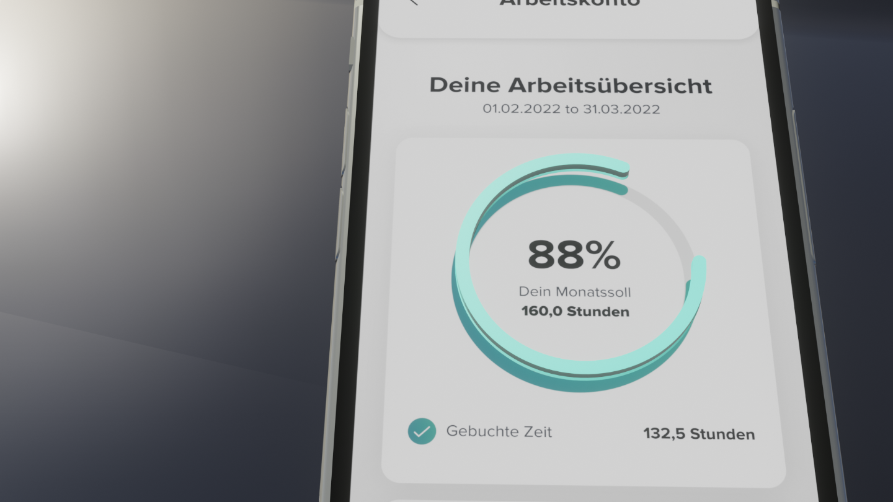
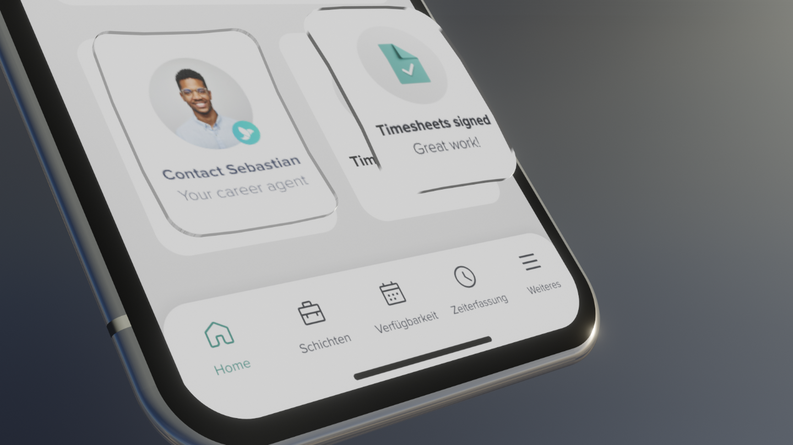
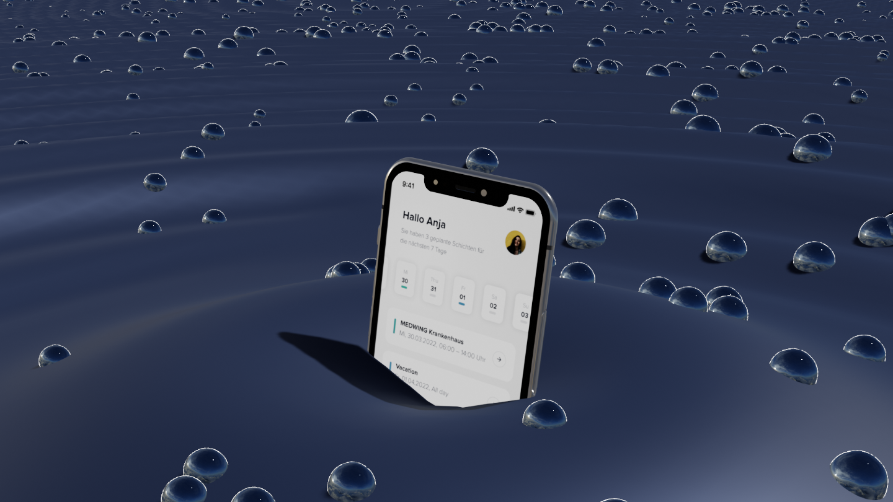

Medwing App (2022)
3D animation showcasing German health app Medwing
Medwing helps medical professionals find flexible and suitable jobs in Germany. They wanted an animation to show proof of concept at an event with nurses and doctors.
3D logo of Medwing app, bright green bird
Made a 3D logo from provided SVG.

Isolating parts of UI design to make 3D objects

UI elements popping out from the screen
Most complex Blender animation I had done at the time. I enjoyed the challenge of animating UI elements and showcasing an app in 3D.

iPhone coming out from a dark rippling floor
If there was a higher budget, I would have worked on making the transformation between the 3D logo and the phone smoother. Now that there are geometry nodes in Blender, it would be possible to do this much more accurately.